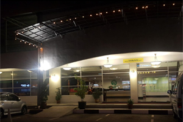
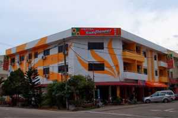
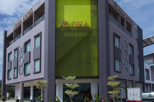

The best and affordable hotel in Pontian District; the district where also known as "The Southern-Most Tip of Mainland Asia".
| Hotel | Locations | Contact No. |
|---|---|---|
| 1. Hotel Pontian | Jalan Delima, Pusat Perdagangan Pontian, 82000 Pontian, Johor, Malaysia. | Phone: +607-686 1000 |
| 2. Sunflower Express Hotel | 726, Jalan Taib, Kampung Atap, 82000 Pontian, Johor, Malaysia. | Phone: +607-686 1111 |
| 3. Aloha Hotel | Jalan Delima 13, 82000 Pontian District, Johor, Malaysia. | Phone: +607-686 8866 |
| 4. Persada Hasra Chalet & Homestay | 27, Lorong Haji Ahmad Zawawi, Jalan Pt Semerah, 82000 Pontian, Johor. | Phone: +6016-624 2916 |
| 5. Tropical Homestay Pontian | No.6, Lot 2020, Lrg Haji Majid, Jln Prt Semerah, 82000, Pontian, Johor. | Phone: +6012-758 8323 |